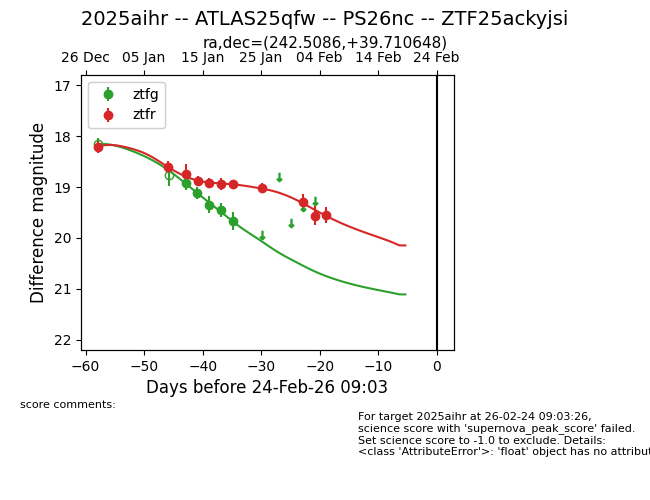
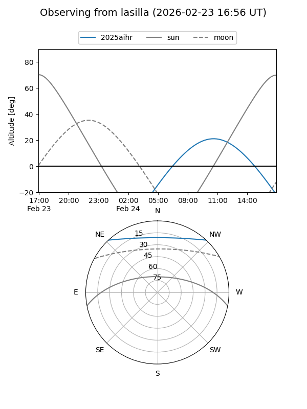
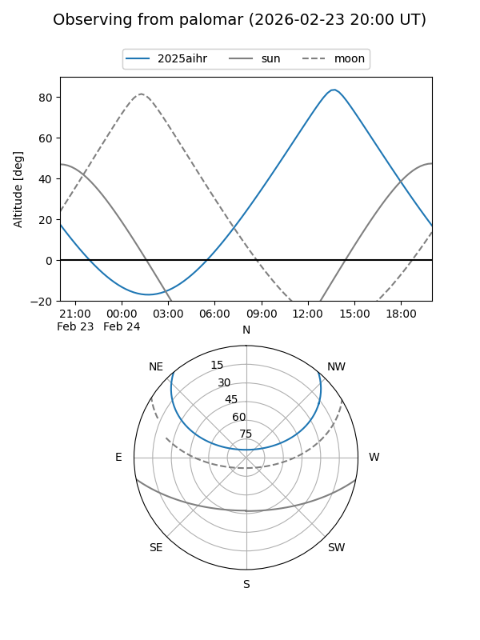
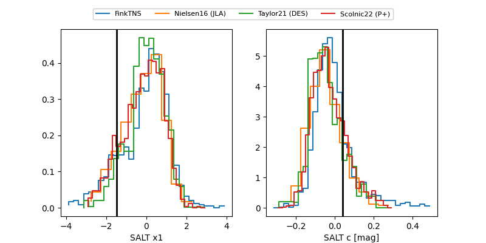

2025aihr
Target 2025aihr at 2026-01-16 14:00
Aliases and brokers:
FINK: link
Lasair: link
ALeRCE: link
TNS: link
YSE: link
alt names
ZTF25ackyjsi (ztf,fink_ztf)
2025aihr (tns,yse)
ATLAS25qfw (atlas)
Coordinates:
equatorial (ra, dec) = 242.5086,+39.71065
equatorial (HMS+DMS) = 16:10:02.07,+39:42:38.33
galactic (l, b) = (63.1532,+47.27524)
Flags:
Photometry:
last ztfg=19.35, ztfr=18.92
3 ztfg, 5 ztfr detections
Lightcurve

Visibility


Additional plots
